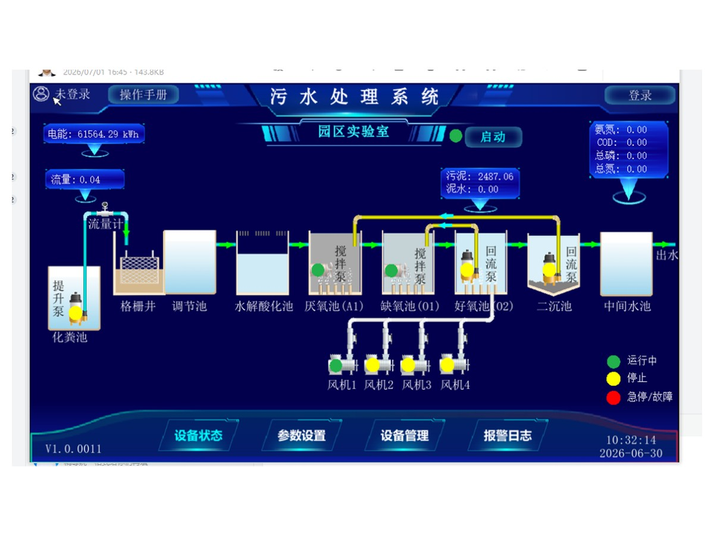
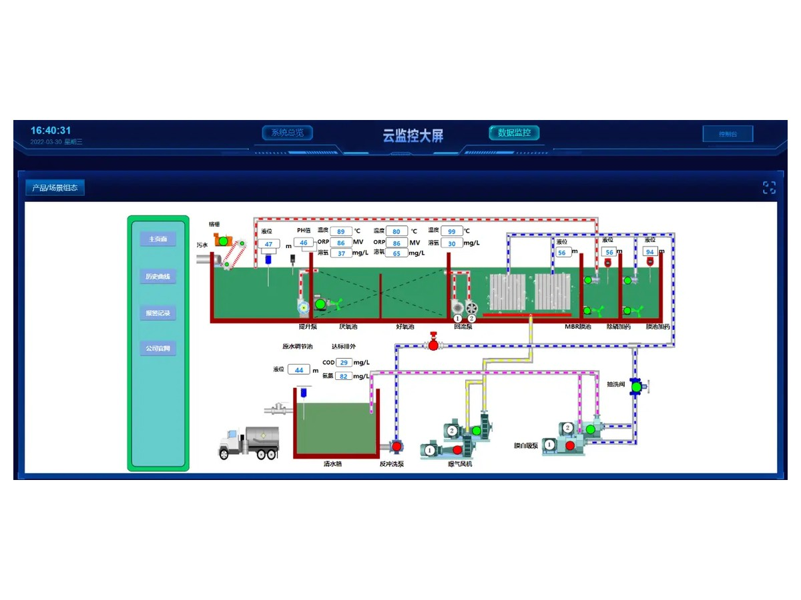

污水处理厂解决方案 ↗
规模匹配 · 提标改造 · 运行稳定性
按设备形态和配置分组浏览，点击图片可放大。具体型号、参数及供货范围以项目确认为准。


服务内容包括电气规划方案、成套电气柜生产、机电施工安装、设备运行调试及运营售后服务。控制系统的点位、协议、联锁与远程权限需按项目确认。
| 评估项目 | 参数或确认事项 |
|---|---|
| 监测点位 | 〔待确认：智能控制 监测点位〕 |
| 控制对象及联锁 | 〔待确认：智能控制 控制对象及联锁〕 |
| 通信协议 | 〔待确认：智能控制 通信协议〕 |
| 报警分级 | 〔待确认：智能控制 报警分级〕 |
| 数据留存周期 | 〔待确认：智能控制 数据留存周期〕 |
| 远程权限 | 〔待确认：智能控制 远程权限〕 |
规模匹配 · 提标改造 · 运行稳定性
分散站点 · 低温运行 · 尾水利用
高有机负荷 · 油脂分离 · 生产波动
分类收集 · 消毒控制 · 污泥管理
纳管条件 · 分类处理 · 改造衔接
汛期工况 · 泵组冗余 · 远程运维
先核对接口、通信条件、断网策略及操作权限，再确定远程功能。
可沟通电气规划、成套电气柜生产、机电安装和调试服务。〔待确认：具体型号、控制清单与交付周期〕
〔待确认：该类产品在现有项目中的实际供货范围及可公开案例〕
查看已有项目资料留下项目类型、规模和联系方式，便于进一步核对技术需求。
本页为效果预览，表单暂未开放。